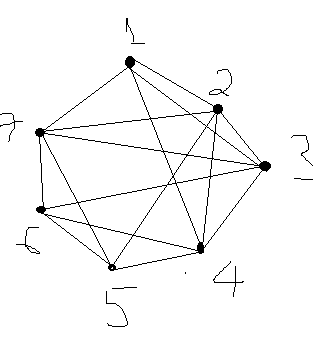

Về trang chủ
Tô màu đồ thị và bài toán lập lịch
* Tô màu đồ thị
I. Bài toán
- Để phân biệt các miền trên bản đồ ta phải tô màu chúng bằng các màu khác nhau.
- Mô hình hóa bài toán:
+ Mỗi miền tương ứng với 1 đỉnh của đồ thị
+ Hai đỉnh có cạnh nối với nhau nếu 2 miền đó có chung biên. Đồ thị nhận được là đồ thị đối ngẫu của bản đồ
+ Đồ thị đối ngẫu của bản đồ là đồ thị phẳng
- Bài toán tương đương: Tô màu các đỉnh của đồ thị sao cho 2 đỉnh kề nhau thì được tô bởi 2 màu khác nhau và số màu là ít nhất
II. Các định nghĩa và định lý:
- Tô màu 1 đơn đồ thị là gán mỗi màu cho 1 đỉnh của đồ thị sao cho không có 2 đỉnh kề được gán cùng 1 màu.
- Số màu của 1 đồ thị G kí hiệu là X(G) là số màu tối thiểu cần để tô màu đồ thị G
- Số màu của 1 đồ thị phẳng bất kì không lớn hơn 4
- Nhận xét:
+ Số màu của đồ thị lưỡng phân là 2 màu
+ Số màu của đồ thị đầy đủ Kn là n màu
III. Thuật toán tô màu đồ thị
1. Tô màu theo giải thuật hạ bậc:
a. Thuật toán
While(tất cả các đỉnh đã được tô)
{
Bước 1: tô màu I cho đỉnh có bậc lớn nhất
Bước 2: + Bậc của đỉnh được tô màu thi hạ xuống 0
+ Bậc của đỉnh kề với đỉnh đã tô thị: bậc=bâc-1
Bước 3: cấm tô màu I cho các đỉnh vừa bị hạ bậc
}
b. Mã giả:
Khởi tạo giá trị ban đầu cho mảng daxet[] và mảng maucam[][]
For(i € n){ // n là số đỉnh
Daxet[i]=-1; //chưa có đỉnh nào được xét
}
for(i€n){
for(j€n){
maucam[i][j]=-1; // chưa có màu cấm cho các đỉnh
}
}
do{
dinh_max=dinh_bac_max(); //gọi hàm con tính đinh_bac_max;
mau_dinh[dinh_max]=chonmau[dinh_max] //gọi hàm tô màu
daxet[dinh_max]=1; //xem như đã xét,
dem++;// biến đại diện cho đỉnh đã tô,
for(i€n){
If(a[dinh_max,i]=1 && daxet[i]!=1){
Maucam[i][dinh_max]=mau_dinh[dinh_max];
// màu của đỉnh đã tô sẽ bị cấm đối với các đỉnh kề với nó
tong_bac_dinh[i]-- ;
Tong_bac_dinh[dinh_max]=0;
}
If(tong_bac_dinh[i]==0 && daxet[i]!=1){
// lúc này xét xem sau khi hạ bậc nếu bậc đỉnh nào =0 và chưa xét thì tô luôn
Mau_dinh[i]=chon_mau[i];
Daxet[i]=1;
Dem++;
}
}
}while(dem<=n);
d. Hiện thực bài toán với Java code
// các bạn khởi tạo các biến sau ở trên nha.
int maucam[][];
int tong_bac_dinh[];
int dinh[];
int mau_dinh[];
// sau đó trong constructor các bạn khởi tạo giá trị như sau
mau_dinh = new int[soDinh];
tong_bac_dinh = new int[soDinh];
maucam = new int[soDinh][soDinh];
dinh = new int[soDinh];
for (int i = 0; i < soDinh; i++) {
mau_dinh[i] = -1;
}
// tôi mặc đinh là các bạn đã có được ma trận kề (matrix của tôi) và soDinh (số đỉnh) rồi nha
// Đây là toàn bộ phần code
public void tongbac() {
for (int i = 0; i < soDinh; i++) {
tong_bac_dinh[i] = 0;
for (int j = 0; j < soDinh; j++)
tong_bac_dinh[i] = tong_bac_dinh[i] + matrix[i][j];
}
}
// ham tra ve dinh co bac lon nhat
public int dinh_bac_max() {
int max, vitri;
max = tong_bac_dinh[0];
vitri = 0;
for (int i = 0; i < soDinh; i++) {
if (tong_bac_dinh[i] > max) {
max = tong_bac_dinh[i];
vitri = i;
}
}
return vitri;
}
// ham kiemra xem nhung mau nao se cam va khong to cho dinh dang xet
public int kiemtra_maucam(int v, int mau) {
for (int i = 0; i < soDinh; i++)
if (maucam[v][i] == mau) //
return 1;
return 0;
}
public int chonmau(int v) { // ham se chon ra mau thich hop de to cho dinh dang xet
int mau = 0;
do {
if (kiemtra_maucam(v, mau) == 0) { // mau to cho dinh v phai khong trung voi mau cam
return mau;
} else
mau++;
} while (true);
}
void tomau() {
int dem = 0;
int dinh_max;
int daxet[] = new int[soDinh];
for (int i = 0; i < soDinh; i++) {
daxet[i] = -1; //xet xem dinh nao da duoc to mau hay chua to mau
}
for (int i = 0; i < soDinh; i++) {
for (int j = 0; j < soDinh; j++) {
maucam[i][j] = -1;// khoi tao mang hai chieu "macam"va khoi tao gia tri bang dau=-1 tuc khong co dinh nao bi cam
}
}
do {
dinh_max = dinh_bac_max();
mau_dinh[dinh_max] = chonmau(dinh_max);
daxet[dinh_max] = 1;
dem++;
for (int i = 0; i < soDinh; i++) {
if ((matrix[dinh_max][i] == 1) && (daxet[i] != 1)) {
maucam[i][dinh_max] = mau_dinh[dinh_max]; //mau da to cho dinh_max se bi cam to cho cac dinh ke voi no
tong_bac_dinh[i]--; //ha bac cac dinh xuong
}
if (tong_bac_dinh[i] == 0 && daxet[i] != 1) {// luc nay xet xem sau khi ha bac neu dinh nao =0 va chua xet thi to luon
mau_dinh[i] = chonmau(i);
daxet[i] = 1;
dem++;
}
}
tong_bac_dinh[dinh_max] = 0; // bac dinh da to duoc gan bang 0;
} while (dem < soDinh);
for (int i = 0; i < soDinh; i++) {
System.out.printf("mau dinh %d: %d\n", i + 1, mau_dinh[i] + 1);
}
}
e. Ưu khuyết của thuật toán:
Với thuật toán trên chương trình sẽ chạy khá tốt, độ phức tạp củ giải thuật là O(n2) ,
tuy nhiên cho đến này vẫn chưa có thuật toán nào thật sự tối ưu, không phải lúc nào
việc "tô màu" cũng cho ra sắc số bé nhất.
2. Tô màu theo giải thuật tham lam
Sẽ cập nhật sau nhé
* Bài toán lập lịch
Đề bài: Hãy lập lịch thi trong trường đại học sao cho không có sinh viên nào phải thi đồng thời hai môn cùng 1 lúc
Mô hình hóa bài toán:
- Hai đỉnh của 1 đồ thị là 1 môn thi
- Hai đỉnh có cạnh nối với nhau nếu đó là 2 môn học mà sinh viên đó phải thi
- Thời điểm thi ứng với mỗi môn ứng với một màu
Bài toán trở thành bài toán tô màu cho đồ thị trên sao cho 2 đỉnh kề nhau có màu khác nhau.
Giải bài toán:
1 .Ví dụ: có 7 môn thi với thông tin như sau
Môn 1: có các sinh viên A,B, C, D thi
Môn 2: có các sinh vien A,E,F,G,H thi
Môn 3: có các sinh viên B,E,I,J,K thi
Môn 4: có các sinh vien B,F,L,M thi
Môn 5: có các sinh viên G,L,N,O thi
Môn 6: có các sinh viên J,M,N,P thi
Môn 7: có các sinh viên D,H,K,O, P thi
Hãy sắp xếp lịch thi thành các đợt sao cho các sinh viên điểu có thể dự thi tuần tự các
môn mình đăng kí
Từ dữ liệu đề bài cho ta dựng được đồ thị sau:

Quy luật để tạo ra đồ thị như sau: (theo cách mình nghĩ nhé)
1. Xét môn 1 trước: Thấy có 4 môn A,B,C,D.
2. Lấy A (sinh viên A) xem có nằm trong môn nào không. Ở đây ta thấy A có nằm trong môn 2
3. Tìm thấy A trong 2 nghĩa là có 1 cạnh nối môn 1 và môn 2.
4. Thực hiện cho đến hết sinh viên trong 1 môn và hết tất cả môn
2. Các bạn áp dụng thuật toán bằng Code hoặc chạy tay đều được. Thuật toán ở trên nhé kết quả sẽ là:
a. Kết quả khi chạy thuật toán:
Đỉnh | Màu
1 1
2 2
3 3
4 4
5 1
6 2
7 4
b. Kết quả được liệt kê lại như sau
Đợt thi | Môn thi
1 | 1,5
2 | 2,6
3 | 3
4 | 4,7
Các bài toán khác
1. Bài toán phân chia tần số
Các kênh truyền hình từ số 2 đến sô 13được phân chia cho các đài truyền hình sao cho
không có hai đài cách nhau không qua 150 dặm lại dùng chung một kênh, hãy tìm cách
phân sao cho số kênh dùng là ít nhất
Giải pháp:
Biểu diễn bằng đồ thị:
Mỗi đình là một đài phát
Hai đỉnh được nối với nhau một cạnh nếu hai đài phát cách nhau ít hơn 150 dặm. Số
màu của đồ thị chính là số kênh cần dùng
2. Định vị các thanh ghi:
Một chương trình dời chỗ các giá trị của các biến bên trong bộ nhớ của máy tính điện
tử, trong khi đó một chương trình số lại có nhu cầu dời các giá trị của các biến trong
thanh ghi, vì thanh ghi rất nhanh và khá đắt, vì vậy việc sử dụng chúng hữu hiệu là cần
thiết
Nếu hai biến không được sử dụng cùng một thời điểm, ta có thể ghi chúng lên cùng
một thanh ghi.
Như vậy đối với mỗi biến, ta phải tính toán thời gian khởi đầu và kết thúc. Một biến
được gọi là đang hoạt động giữa thời gian khởi đầu và kết thúc của nó. Ta xây dựng
một đồ thị G=(V,E) với:
Tập đỉnh V=tập các biến
Tập cạnh E= canh e nối giữa hai đỉnh nếu hai biến này cùng hoạt động trong cùng một
thời điểm
Sắc số γ(G) của G là số các thanh ghi nhỏ nhất cần thiết.
3. Bản đồ địa dư:
Một bài toán lí thú là tô màu các bản đồ sao cho hai vùng khác nhau mà giáp nhau
không cùng một màu.
Đỉnh đồ thị: các nước tren bản đồ
Cạnh đồ thị: hai đỉnh được nối nêu hai nước trên bản đồ giáp nhau